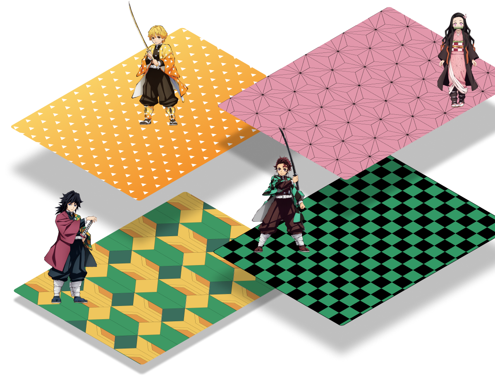

Recreate and remix famous kimono patterns of main characters from globally famous japanese anime Demon Slayer: Kimetsu No Yaiba.
*All credits to Koyoharu Gotouge, the writer and illustrator of Demon Slayer: Kimetsu No Yaiba manga
